前言
先给出结论：wndr4300路由器刷第三方固件拓展可玩性是可行的，但自由度的扩大带来的是系统部分性能的损失以及复杂的调试工作，刷入第三方固件，哪怕是官方第三方固件，都没有办法轻易通过可视化交互方式轻松刷回原厂固件，希望在刷之前三思。我刷了固件之后经过一番调试成功使用OpenWrt的官方固件达到了流量转发和无线wifi的功能。但是由于第三方固件的原因，穿墙能力以及带宽限制导致网速和稍远的连接不稳定，所以在家人的要求下，最后又刷回了原厂固件。这是一篇关于我折腾wndr4300路由器的博客，希望能对你有所帮助。
wndr4300的替代方案
因为自己即将要出国的缘故，从学长那里了解到在国外留学对国内网络环境的需求还是蛮大的（像网易云，bilibili等），遂萌生了自己动手搭建一个从国内向国外的流量转发渠道的想法。
本身自己有通过vps搭建不可描述上网工具的经历，所以在选择方案的时候就希望能在中国地区租用或者架设一台拥有中国ip地址的服务器，以此来进行流量转发。
中国ip的云服务器
那么既然要租借/搭建服务器，首推的就是国内所谓的各种“云”,e.g.阿里云，腾讯云，华为云，毕竟是人家已经成熟的技术。随手查了一下，发现各家的带宽都很小（学生套餐对比），感觉事情有些隐隐的不对劲。随即上自己的阿里云组了一下自己觉得够用的配置：
带宽：
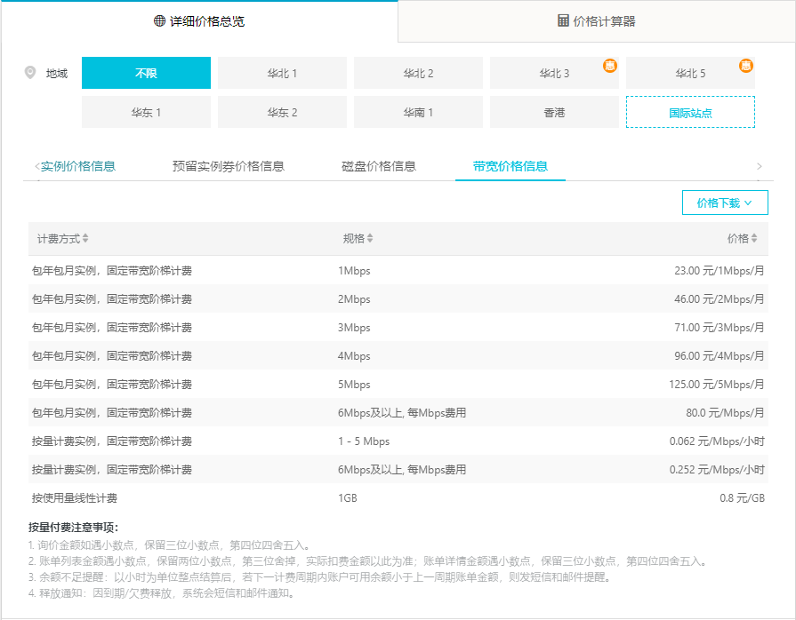
实例价格：
可以看出，对比搬瓦工的同档价格来说，国内云服务供应商要求的费用实在难以接受，尤其是上大带宽后，和搬瓦工随手1GB/s的带宽相比简直天差地别，单位带宽的价格更是被吊打。
软路由
既然租用云服务器的路走不通，那么只能转向自己搭建一个服务平台，很自然地就想到了软路由——一个不错的替代方案。YouTube上看了一些相关的科普视频后发现我这个情况家用的软路由基本都是企业级的魔改得到的，价格普遍在800朝上,不过还能拓展组成NAS或者网页服务器等，基于软路由貌似能做很多事。配合公网的ip就能组成一个小的服务器（8.12补充，经过查询，在中国的ISP供应商都是封80,8080端口的，所以想直接用公网ip就搭服务器的思路就有一些性能上的缺失——相当于不能部署网页功能了（当然换个端口，域名解析一样同样能做到网页服务，只是会麻烦一些，况且在中国，加端口的解析也是要向服务商登记的），如果有人想尝试这个方向，要向运营商发出申请才能解封端口）。
那么这样看下来，使用软路由做流量转发的思路，缺点还是一个字：贵——和ECS相比虽然是人家一年左右的开销，但是相对于针对留学生的飞机场（两年600RMB左右)，竞争力还是稍显不足，优势在于可玩性~很~大，未来可以打算入手一个，但对现阶段的需求来说不是好的选择。
基于LEDE/OpenWrt的方案
&ehhhmsp; 在查询软路由资料的时候，由软路由的运行系统LEDE/OPENWRT(这倆18年合并了)，进而想到了一条新的思路，具体可以做两种实现：
使用低成本硬件搭载linux系统来实现流量转发功能：
既然连软路由使用的系统原理上来说都是基于LINUX的操作系统，那不如用低成本的硬件来实现专属化的功能就好了。备选方案有各种派e.g.树莓派，香蕉派以及各种能搭载linux操作系统及千/万兆网卡的开发板即可。优点显而易见：便宜，缺点也从优点衍生而来：不稳定。
改造现有的路由器
硬路由本身是由硬件组成的系统，但通过刷入相应的固件就可以驱动各个硬件模块，就能达到操作系统相类似的效果。这么做的好处是，我家里就有一个netgear网件的wndr4300硬路由作为wlan发射器在使用，刷入镜像很方便就能换成第三方固件，从而解锁各种姿势，缺点就是要花一些心思摸索，而且我本身对要刷固件的硬件操作不是很熟练，事实也证明，这方面的奇怪技巧还是蛮多的，走了不少弯路。
最终方案
总而言之，当下折腾wndr4300是最合适的选择，网上的教程比较齐全，同时有电信送的WiFi作临时WLAN发射器上网，最主要的是，不用额外购置硬件
wndr4300刷OpenWrt固件
OpenWrt固件下载
决定要折腾wndr4300之后，第一件事是要去OpenWrt官网下载wndr4300专属的固件，19年8月的最新固件如图所示：
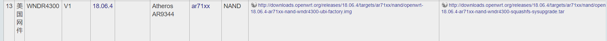
注意！wndr4300 有v1和v2的区别，v2网上说法不支持第三方固件，要注意区别，最简单方法看一下wan口是不是和lan口紧紧挨着，是的就是v1，不是就是v2
想要详细了解wndr4300有关的OpenWrt固件内容可以点击这里
这里要特地提一下：虽然刷正版的固件是最安全最可靠的办法，但其实很多原意折腾的人会发现wndr4300路由器内部的内存有128MB可以使用，官方固件中有90+MB内存被保留无法使用。网络上有很多完全释放保留内存的固件，这里要谨慎刷入——虽然安全性上我们很相信制作固件的作者，但是根据我之后的刷机经验来看，开启完整128MB内存的固件，如果想刷回原厂固件，将要走更多曲折的道路，一旦刷不好，又回不去就很尴尬了。所以推荐第一次上手的小白不要一上手就刷其他来源的固件。先把官方固件调教好了，如果有兴趣，想挖掘跟多潜力，再尝试民间来源的固件，到时候tftp等烧录方式折腾起来也顺手一些。
刷入固件
下载完固件镜像之后，可以通过网件自己的控制平台进行升级。登陆http://www.routerlogin.net，默认用户名：admin，密码:password。进入高级菜单，在管理中点击固件升级:
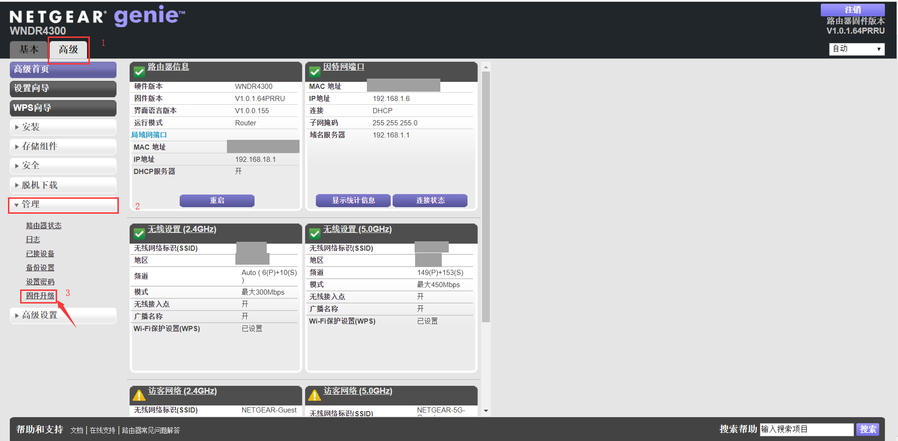
上传之前下下来的OpenWrt固件，点击是，就会自动刷入固件（注意刷入OpenWrt固件之后，是无法通过OpenWrt自带的固件升级渠道页面交互式地刷回原厂固件的，点击是前请三思
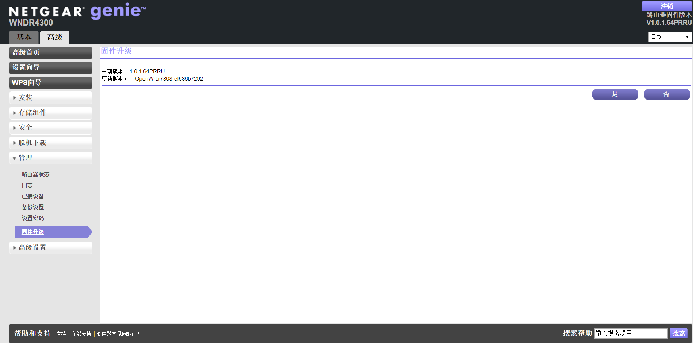
上述步骤结束以后路由器会自动重启，稍等一会，就能在无线网络列表中找到OpenWrt名字的网络，此时是不需要密码可以直接登录的：
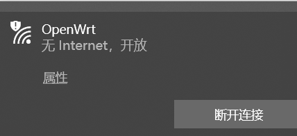
此时登陆http://192.168.1.1，可以看到luci的登陆界面：
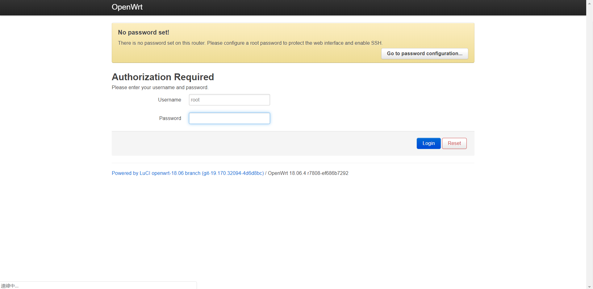
此时说明OpenWrt安装成功了
OpenWrt系统的配置
在OpenWrt的登陆界面，根据提示设置登陆密码，由于luci是默认开启ssh连接的，所以在设置完成密码之后，我们是可以用像登陆远程服务器的方式登陆局域网上路由器的系统中（这一部分将在后续会有所介绍）。
OpenWrt网络设置
如果你的家中是直接拉取网线上网的，不是光纤接入路由器再转网口的方式，需要在手动配置PPPoE拨号账户密码。硬件上把网线直接接入lan口。软件上，在控制面板点击network中的lan设置，配置协议为PPPoE,点击swtich protocal，输入账户密码（由你的ISP提供），应用一下，等待配置，期间会重启，就能上网了。
如果是由ISP直接拉光纤入户的，一般都会附送一个lan口光纤的路由器，那么直接从送的路由器的wan口接出网线，插入wndr4300的lan口，因为OpenWrt默认是静态转发，所以不需要任何操作，重启一下就能正常进行工作了。
OpenWrt优化
到此为止，你的wndr4300应该能正常工作了，但和原厂相比可能各个方面都还欠缺一点，我自己测试下来第一次打开网页的速度很慢，甚至有一些网站打不开。这个时候需要我们安装一些插件等做一点优化：
安装全功能dnsmasq
这一步是为了避免dns解析出现问题，所以要把自带的dnsmasq插件换成dnsmasq-full，能优化加载速度。具体见下图：
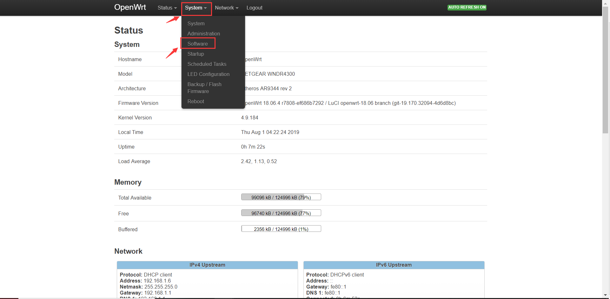
从图中我们其实还可以看到我们的内存有99MB左右没有解放出来，处在没有用到的状态，如果你直接刷了解放全内存的固件，此处应该能看到全可用。根据步骤进入相应software网页。这里其实是一个可视化的包管理界面，所以尽量不要操作的太快，点击一下之后相应的命令会在后台跑。我们在软件页面点击一下update lists来更新一下OpenWrt中的软件包。
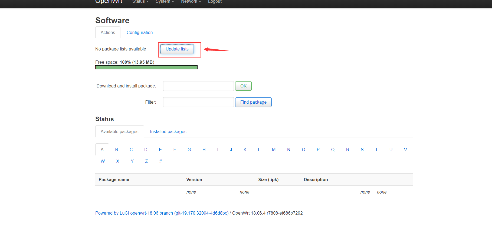
稍等，在下方会刷出可用的官方软件包。首先点击installed packages，把系统自带的dnsmasq卸载：
再回到available packages，找到dnsmasq-full，点击安装即可：
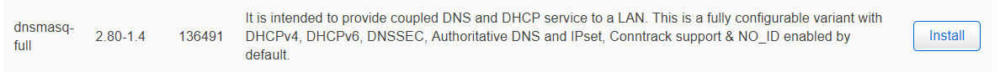
安装ss进行流量转发
设置最大传输单元
安装了dnsmasq后，尝试更新了我的dns解析，用了144.144.144.144，打开网页还是有一些延迟，但已经好很多了。之后搜索我所在地区的dns服务器，键入后效果提升一般。为解决这最后一丢丢开启延迟的问题，在网上搜索了很久，应用以下方式解决了问题：
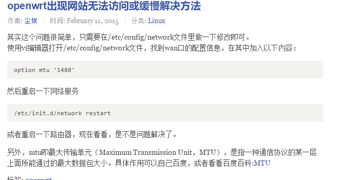
这里就涉及到修改OpenWrt中配置表的问题了，我们需要使用ssh登入的方式，才能登入OpenWrt的终端，当然，使用telnet方式也可以。打开你电脑的cmd终端（管理员权限不是必须的），键入ssh root@192.168.1.1在之后填入yes，输入你的密码（这一步的密码和你控制台的密码是一样的）。出现如下页面说明你成功登入终端了。
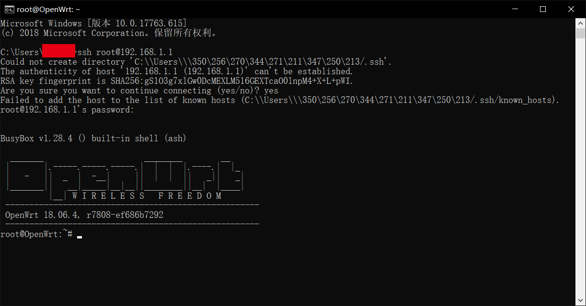
根据上述方法修改/etc/config/network文件，即可，测试下来开启国内网页速度基本和原厂固件一致。
OpenWrt应用在wndr4300上的问题
如果你跟着我的方法一步步走到这里，那么恭喜你，你现在已经拥有了一个能做流量代理转发，以及基于OpenWrt无穷可玩性的wndr4300路由器了。
但是使用了一周左右，父母反映说连接wndr4300的无线网络后，网速有波动，且进入房间（隔着一堵墙）时2.4Ghz和5Ghz的信号都特别弱，我在尝试拉高功率和切换dns解析后无果。上网查询大概了解了这是刷第三方固件的弊病：网速上不去的原因点这里，下载速度上不去点这里，穿墙信号差问题点这里
基本解决办法要么特别麻烦，刷民间固件才能解决，要么就没有解决方法，比如穿墙问题貌似无解（也可能是我太菜了），总而言之，这一番折腾下来，虽然实现了我一开始的目标，能通过刷第三方固件进行流量转发即ss服务器搭建和基本无线网络功能，但因为影响到家庭正常使用了，还是决定刷回原厂固件。
刷回原厂固件
tftp
tftp（Trivial File Transfer Protocol）是TCP/IP协议族下的一种协议，它允许客户端从远程主机获取文件或将文件放入远程主机。以下描述来自wikipedia：
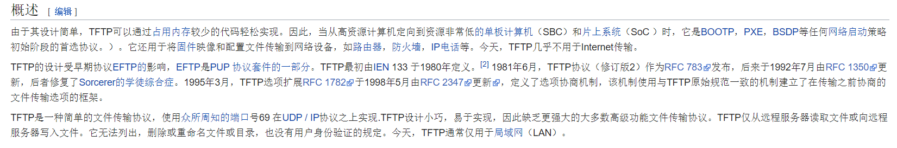
一般烧录网络设备时候都会使用tftp协议，默认端口为69。市面上有很多常见的tftp烧录程序，比如tftpd32、tftpd64以及一些人自己写的tftp烧录软件，本人试下感觉这些软件的都有一些不好使，原因在于使用期间要么不报错，像死掉了一样，我都不知道是不是卡机了；要么只显示写入失败，不显示为啥失败。碰巧使用tftp的烧录很考究写入时间，晚一点就写不进去，这对没有及时报错反应的软件来说是致命的。所以我个人建议使用cmd命令行结合win自带的tftp功能进行刷机比较靠谱，如果不知道怎么打开tftp点这里。如果对命令行不太了解的小白，仍然希望使用tftp软件刷入的，请点这里点击下载 ，这里要感谢小黑嘿的博客提供的工具，这是我见过的做的最好的tftp工具，虽然没有命令行方便是了，不过小黑嘿的博客教程有一些问题，在本机ip设置处读者不要效仿，按我的来。
使用tftp协议刷入原厂固件
在网上找了很多帖子有关使用tftp刷原厂固件入wndr4300，但使用均无效，原因在于自己网关没有设置，一些成功的帖子猜测可能设置本机ip为192.168.1.1后，默认网关也会成为192.168.1.1，所以烧录成功，但对我来说，需要单独设置网关为192.168.1.1才能成功，其中原因尚不清楚。发现这个方法来自于https://www.right.com.cn/FORUM/forum.php?mod=viewthread&tid=182697
步骤：
物理连接准备
将wndr4300关机，路由器wan口空置，lan1口接网线入电脑网口，准备写入。
原厂固件准备
访问这里，下载wndr4300v1的官方固件，我用的是v1.0.1.56版本，刷出来会是中文的，语言方面不用担心。至于更新的版本，我没有尝试过，不过刷入之后，可以通过网页点击升级固件，是一样的。
请记住你下载的固件文件地址，后面要用。
电脑ip设置
设置你的电脑本机ip地址、子路掩码以及网关如下：192.168.1.2/255.255.255.0 ，网关 192.168.1.1。windows系统不知道在哪里修改的可以通过控制面板->网络和Internet->网络和共享中心->更改适配器设置，对对应电脑网口的以太网右键->属性，双击Internet协议版本4（TCP/IPv4），在常规中填填入设置。
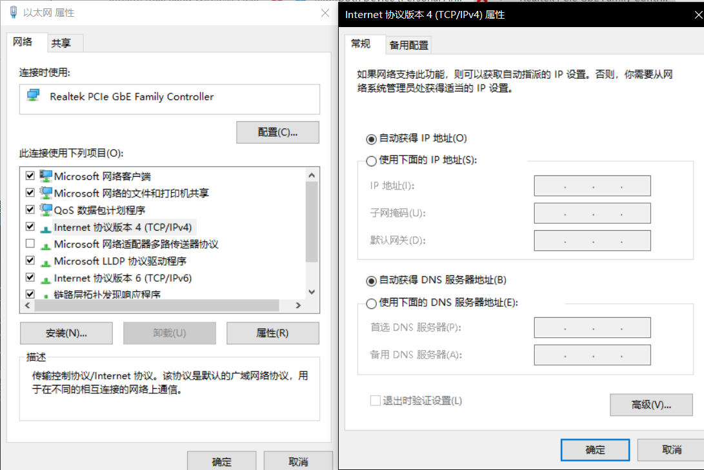
烧录命令准备
打开电脑的命令行终端（win系统win键+r，输入cmd），在命令行里输入：1
tftp -i 192.168.1.1 put 放置原厂固件的绝对路径
因为要刷机，所以可以提前准备，反正按了没有刷入的话，按↑键就还能显示同样的命令，不停↑+ENTER就可以实现不断写入了。
连通性检查
再打开一个命令行，输入命令：1
ping 192.168.1.1 -t
这个时候应该可以看到命令行里在不断刷新，基本都是ping不到，这很正常，因为此时还没有开机。
烧录
按住复位键（就是那个在wndr4300封装壳外面，靠近各项参数那里，有个小洞洞）不放，上电。直到电源指示灯开始闪烁 (绿灯闪烁) ，在这个附近的时候，你会开始看到运行ping命令的cmd里开始出现能ping通的反馈了，此时果断来到tftp命令的cmd，疯狂↑+ENTER，直到看到这个就算成功了。
看到ping通时：
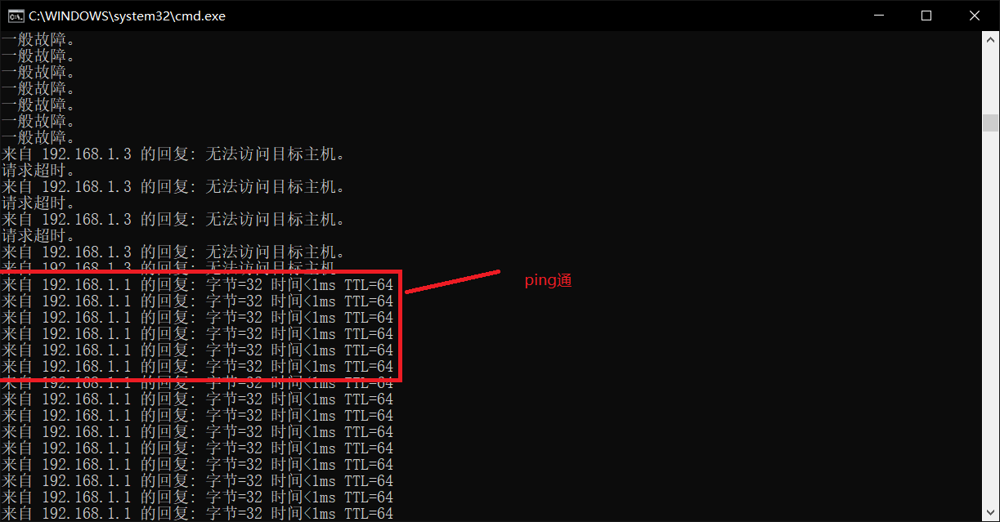
输入成功时：
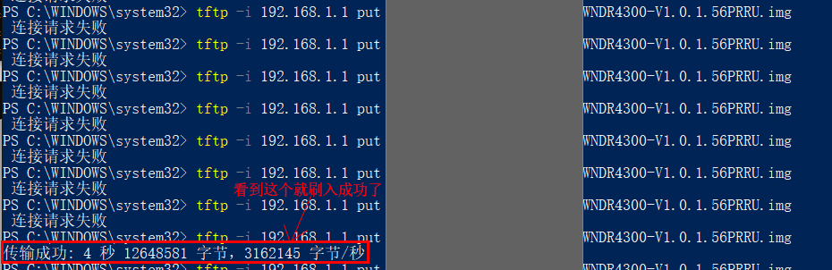
如果一段时间没有看到，祝贺你，这次失败了，从步骤1重新开始。
烧录后操作
刷入成功之后可能wndr4300会疯狂重启，没有办法，只有等，有一些办法说重启3、4次后关机等一等再开机，可以尝试一下。总而言之这个过程很漫长，大约要5min+的时间，成功之后就可以看到wndr4300正常启动了，2.4g和5g的灯亮起（若不亮需要按wifi开启键，信号灯侧从上向下第二个键），搜索一下你的无线网络，可以看到netgear名字的无线网络出现在菜单中，说明刷回原厂成功。
值得注意的是，由于是原厂固件，所以会很贴心地探测192.168.1.1的本地ip是不是被ISP占用显示ISP的控制面板，如果绑定了运营商的控制面板，会自动绑定10.0.0.1作为wndr4300的控制台登入ip，或者可以输入http://routerlogin.net进入控制面板，默认用户名：admin，密码：password。之后的事情就是和之前OpenWrt中设置网络一样，不需要太多技巧。
总结
路由器的折腾
这是我的第一篇长文，零零散散地也写了将近一周左右的时间，总的来看折腾wndr4300还是挺耗费精力的：一开始刷第三方固件很害怕变砖，没想到意外的一次就成了，不得不感叹原厂固件还是牛逼，直接通过网页上传固件的方式就能刷机；反观OpenWrt这边，一旦刷入OpenWrt固件，就没有办法通过网页上传的方式来更新固件了（同来源新版本OpenWrt除外），往好的方向想，可以通过ssh方式登录路由器，完全按照Linux的方式操作系统，安装插件、修改设置的自由度很大，要不是穿墙变差和网速波动，其实wndr4300刷OpenWrt完全可以取代原厂系统来达到很多软路由能做到的事情。
在这个过程中也学习到了很多知识，比如tftp协议，Openwrt的包管理opkg还有hexo的一些写作技巧，还是蛮有收获的。
TODO List
这个帖子到这里就算结束了，但是对路由器的探索应该是不会停止的，未来还是想到手一个软路由试试看搭NAS一类的事情，虽然TB上的NAS都好贵我好穷。如果财力不够支持我折腾软路由，可能会考虑先拿一些“派”练练手，200多块钱也不贵，关于嵌入式系统还有很多可以玩的东西。
未来可能会发的播~~（要是学业繁忙就Coos了）
- 软路由/“派”搭路由系统
- 软路由/“派”做流量转发
- 搭建NAS（看起来这一项很可能因为财力不够而coos）